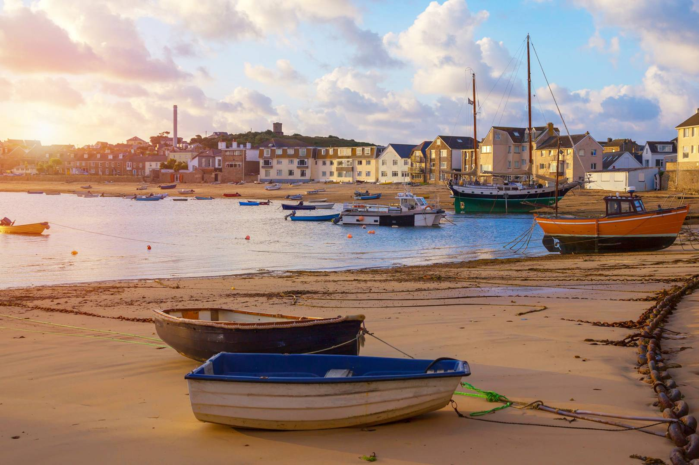

<!-- Modal to get a welcome message when the user clicks on the marker located at the Google map--->

<div id="myModal" class="modal">
        <h5 class="modal-title" id="modalTitle"></h5>
        
        <a href="#" rel="modal:close" id="modalClose">Close</a>
</div>